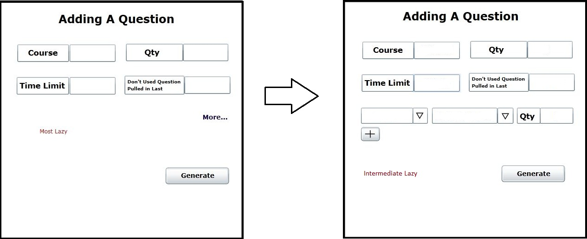
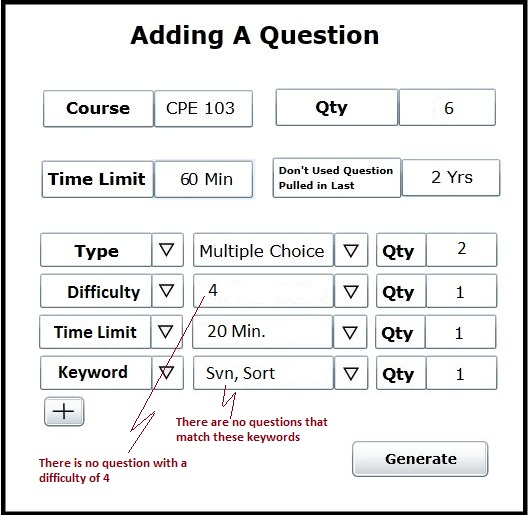
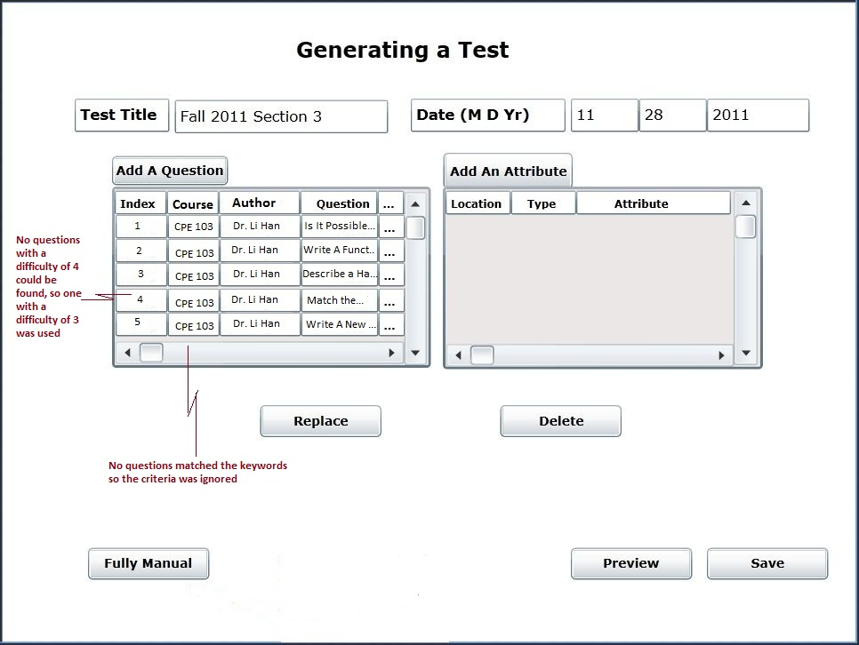

When the user wants to add more specific parameters to the test he is creating, an advanced generation or intermediate level of laziness is used. In the add a question dialog there is a link above the generate button entitled more. When the user clicks this an extra field the user can set is shown below the four main criteria, along with a plus button. This is shown in Figure 2.2.3. This added field contains a drop down menu where the user can specify what parameter to set. These include what type of question, the difficulty, a question specific time limit, and keywords within the question. Once the user clicks one of the parameters another drop down menu is available where the user can set the exact criteria. Next to these two fields is a qty field where the user inputs the number of questions he wants to have this specific criteria. The plus button below this will add another row where the user can specify the next parameter. He can add as many as he wants to the test.

Figure 2.2.3: Shows the changes in the adding a question dialog when the more link is clicked.
An example is shown in Figure 2.2.4 of a type, difficulty, time limit, and keyword parameter set.
Figure 2.2.4: Shows an example of an intermediate level of laziness.
The generating a test front page is now shown in figure 2.2.4.1 with the six new questions the test generator will pull added. Two of these questions at least will be multiple choice. One of them at least will have a difficulty of 4, one of them will have a time limit of 20 minutes, and one question will contain one or both of the keywords. The test generator will not pull questions that have been previously added to a test. As mentioned in the previous section the turn-out would be the same for different types of questions (i.e. short answer, coding, etc), different levels of difficulty, different keywords, and different question specific time limits.
Figure 2.2.4.1: The front page of the generating a test section with the added questions from the advanced generation portion. This test is the same test that was used in the previous sections under generating a test.
Another example is used to show different criteria that can be added.
Figure 2.2.4.2: Adding a question
Figure 2.2.4.3: Front page
When all parameters cannot be met
The rule regarding the four main criteria are discussed in the previous section.
In the event none of the extra parameters can be met (excluding the difficulty criteria, see table below) the test generator will still generate a test that meets the main four criteria following the rules mentioned previously.
When a parameter cannot be met an error message is always displayed to the user with the specific parameter mentioned.
| Criteria | When generator cannot meet (range) |
|---|---|
| Quantity | Must Meet |
| Time Limit | Plus or Minus 1 min. Will repeat until limit can be met or a range of max. 5 min. has been reached. |
| Question Used in Last Range | Next closest question, continually |
| Difficulty | Plus or Minus 1 only. |
| Question Type | Will ignore. |
| Keyword | Will ignore. |
Lets assume the user wants to generate a test but inputs criteria that cannot all be met. Figure 2.2.4 will be used again but the difficulty cannot be met and the keywords cannot be met. There will be a new test that is being generated.

Figure 2.2.5: Advanced generation, some criteria cannot be met.
The resulting front page will look like Figure 2.2.6.

Figure 2.2.6: Front page for test when not all criteria could be met